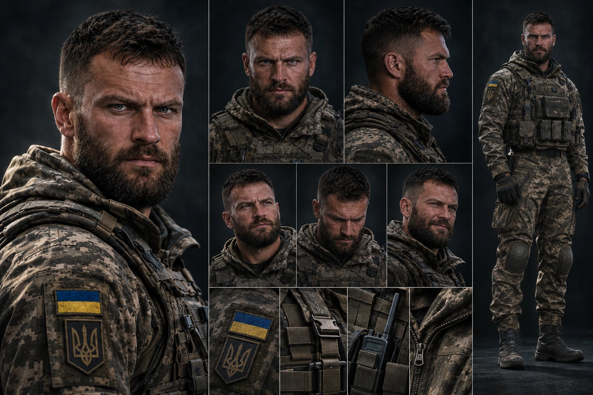

ОСНОВНА ІНФОРМАЦІЯ
Боєць на передовій
Фенікс — український військовий, чия сюжетна лінія показує війну з погляду солдата. Він діє в складі оборонних і розвідувально-штурмових груп, бере участь у боях за поселення, затриманні ворожих військових і зіткненнях із бойовими роботами.
Ім’я / позивний: Фенікс
Належність: українські сили оборони
Роль: військовослужбовець, боєць штурмової групи
Вік: у рукописах не зазначений
Зовнішність: у тексті не описана детально; візуальний еталон — надана фотографія
Спорядження: тактичний обладунок, шолом із дисплеєм, мислезв’язок, голкомет
ХАРАКТЕР І ПОВЕДІНКА
Рішучість і відповідальність за своїх
Фенікс уважно оцінює обстановку, стежить за побратимами й не поспішає застосовувати смертельну силу там, де завдання можна виконати захопленням полонених. Він здатний діяти швидко під вогнем, але не втрачає критичного погляду на те, що відбувається навколо.
Поява незвичних новачків спершу викликає в нього недовіру. Згодом він визнає їхню ефективність, хоча їхні методи та рішення часом змушують його переосмислювати власне місце в групі.
ЗДІБНОСТІ ТА НАВИЧКИ
Підготовка й бойове спорядження
Фенікс використовує мислезв’язок для обміну тактичною інформацією з іншими оборонцями, бачить дані з тактичних дисплеїв і працює в координації з наземними розвідувальними дронами. У боях із роботами застосовує голкомет, змінюючи режим стрільби й уражаючи вразливі вузли конструкцій.
Мислезв’язок — засіб зв’язку оборонців, а не голосовий канал для озвучування кожної команди: ситуація та позиції доступні учасникам через спільний ментальний обмін.
ПОДІЇ ТА ВЗАЄМИНИ
Бойовий шлях
- Ведмідь — побратим Фенікса, з яким він працює в парі, прикриває позиції та проводить операції із затримання противника.
- Сокіл — командир групи під час виходу в промислову зону та зіткнення з бойовими роботами.
- Ігор, Стас і Поль — троє незвичних новоприбулих, яких прикомандировують до групи. Їхні навички суттєво впливають на перебіг операцій.
- Під час оборони поселення Фенікс разом із Ведмедем утримує позицію та вступає в бій, коли противник наближається до забудови.
- Під час операції із захоплення полонених він намагається зберегти життя противникам, які складають зброю.
- У промисловій зоні бере участь у бою з бойовими роботами та допомагає виявити й уразити їхні слабкі конструктивні вузли.
Що не встановлено рукописами
Справжнє ім’я, вік, зріст, місце народження, родина та довоєнна біографія Фенікса в опрацьованих текстах не визначені. Ці дані навмисно не додані.